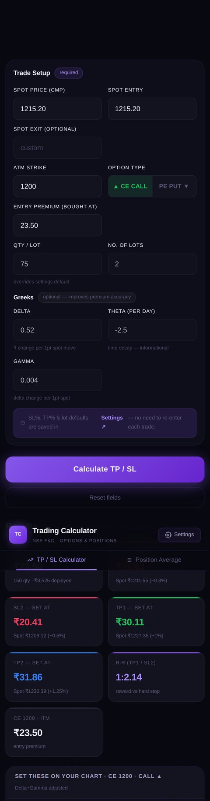
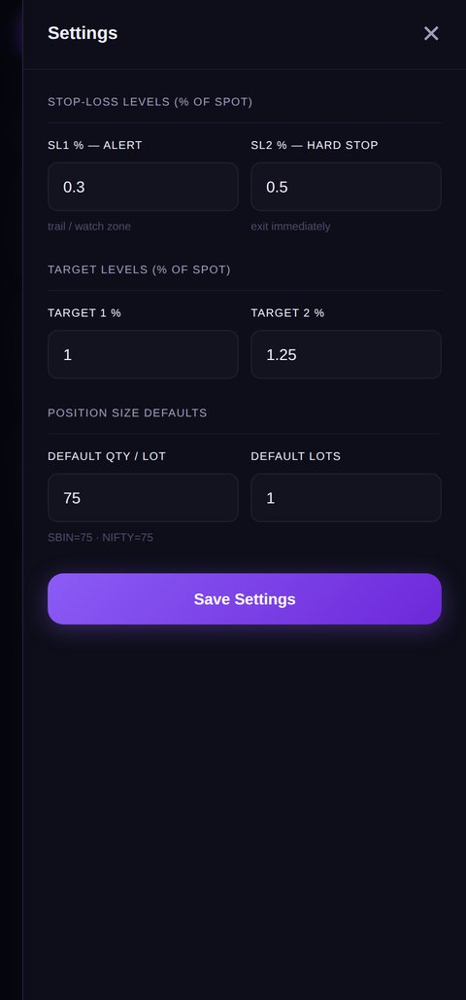
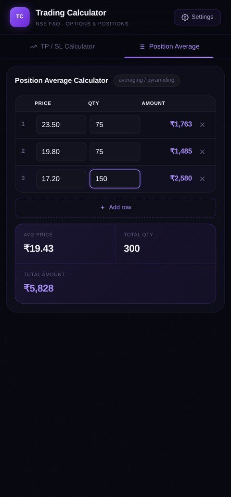

A Greeks-aware TP/SL calculator for NSE options trading — converts spot-price levels into the actual option premium to set on your broker screen, published as a PWA and packaged for Android via TWA.

Trading NSE options intraday means setting stop-loss and target levels before every trade — but a broker's chart shows spot price, not option premium, and the two don't move 1:1. A 0.5% move in the underlying can be a 15% move in the premium depending on Delta, and that relationship itself bends with Gamma as the move gets larger. Doing that conversion in your head, mid-trade, under time pressure, is exactly the kind of arithmetic that produces costly mistakes.
I built this to do the conversion instantly: enter the trade setup once, get back the exact premium values to place as SL and target orders.
Spot price, entry premium, lot size, and optional Greeks go in. Four actionable levels come out — each with the exact premium to set, the corresponding spot level, live P&L at that lot size, and risk:reward against the hard stop.


The calculator escalates through three estimation methods depending on what the trader has on hand at that moment — it never blocks on missing data, it just gets less precise.
0.5 × Gamma × move² — a second-order convexity term, so premium accelerates correctly for larger moves instead of tracking Delta linearly all the way out.Every result is labelled with which tier produced it — "Proportional estimate," "Delta adjusted," or "Delta+Gamma adjusted" — so the trader always knows how much to trust the number.
SL1 is a trail/alert zone; SL2 is the hard exit. Both targets' risk:reward ratios are computed against SL2 specifically, not SL1 — a deliberately conservative choice, since sizing a trade against the softer stop would overstate the reward.
Before shipping, the entry and exit logic was validated against a systematic, rules-based intraday framework — built on volume profile and EMA crossover signals — and backtested rather than trusted on formulas alone. The calculator's output only matters if the levels it recommends actually hold up against how price behaves in practice.
Published as a Firebase-hosted PWA — installable, offline-capable via service worker — then packaged as a Trusted Web Activity for direct Android distribution, so it runs as a standalone app without a WebView wrapper or a rebuild for every change to the web app underneath it.